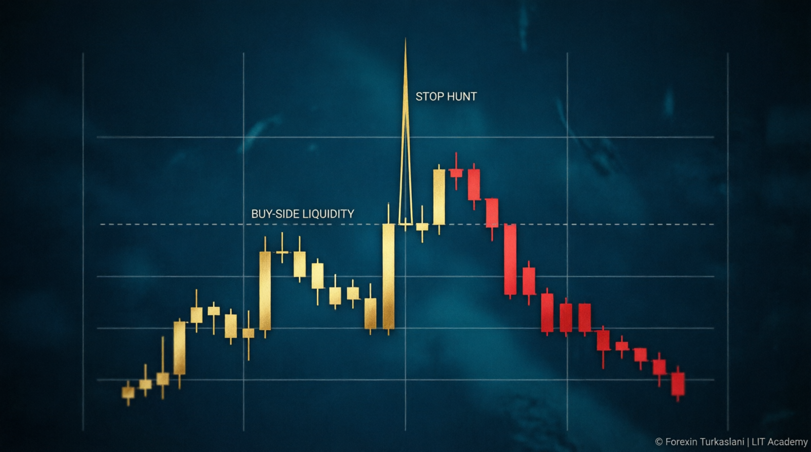
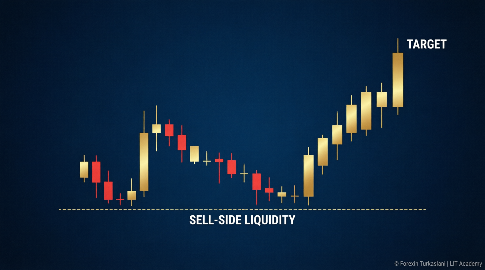
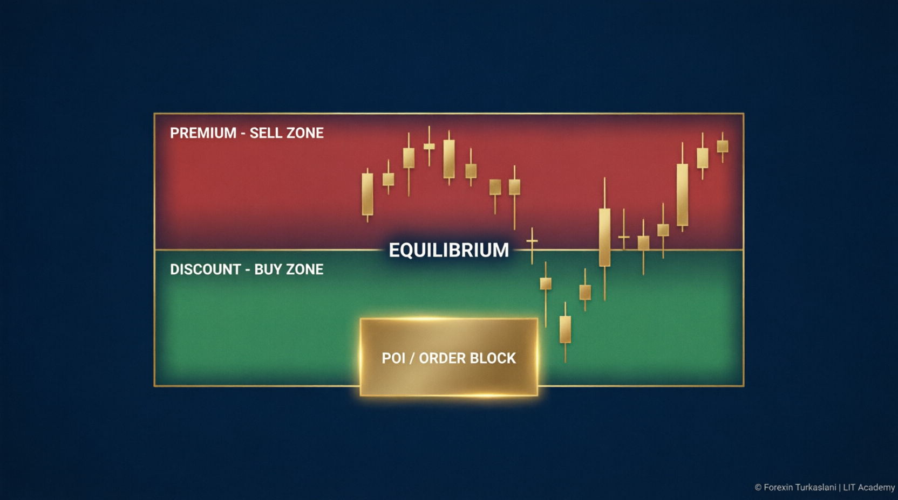

القای نقدینگی (Liquidity Inducement) چیست؟ راهنمای کامل پرایس اکشن با استراتژی LIT
تا حالا شده دقیقاً بعد از اینکه استاپلاستان خورد، بازار همان جهتی برود که تحلیل کرده بودید؟ این «بدشانسی» نیست؛ این القای نقدینگی است. بازار فارکس با گردش روزانهٔ حدود ۶.۶ تریلیون دلار بزرگترین بازار جهان است و سوختِ حرکت آن، نقدینگی است؛ یعنی همان استاپلاسها و سفارشهای معلقِ من و شما. در این مقاله از آکادمی فارکسین ترک اصلانی قدمبهقدم یاد میگیرید نقدینگی کجاست، چرا شکار میشوید و چطور با استراتژی LIT همجهت با پول هوشمند معامله کنید.
نقدینگی سمت خرید و فروش (Buy-Side / Sell-Side)
هر سقفِ نزدهای که هنوز نشکسته، نقدینگی سمت خرید است؛ چون بالای آن استاپِ فروشندگان و سفارشهای خرید معلق جمع شده. برعکس، هر کفِ نزدهای نقدینگی سمت فروش است. معاملهگران تازهکار استاپشان را درست بالای سقفها و زیر کفها میگذارند و دقیقاً همینجا «طعمه» میشوند.

شکار استاپ (Stop Hunt)؛ چرا همیشه من؟
وقتی بازار از یک سقف یا کف عبور میکند و بلافاصله برمیگردد، یعنی شکار استاپ رخ داده؛ پول هوشمند به آن سفارشها نیاز داشته تا پوزیشن سنگین خودش را پر کند. در استراتژی LIT ما منتظر میمانیم این شکار اتفاق بیفتد و بعد همجهت با حرکت واقعی وارد میشویم؛ نه قبل از آن.
سقفها و کفهای برابر + نقدینگی خط روند
سقفهای برابر (Equal Highs) و کفهای برابر (Equal Lows) مثل آهنربا هستند؛ چون همه آنها را «حمایت/مقاومت قوی» میبینند و پشتشان کلی استاپ چیده شده. همینطور خط روندهایی که چند بار تست شدهاند؛ شکستنشان یعنی یکجا فعال شدن همهٔ استاپها. اینها پرنقدینگیترین نواحی چارتاند.

نقدینگی سشن آسیا و بالاترین/پایینترین قبلی
بالاترین و پایینترین روز، هفته و ماه قبل و همچنین سقف و کف سشن آسیا، همگی نقدینگی انباشته دارند. آسیا معمولاً یک بازهٔ تثبیت است و لندن/نیویورک دوست دارند آن را شکار کنند؛ پس آسیا برای ما «راهنمای روز» است، نه سیگنال معامله.
سازهٔ ۳ شمعی؛ زبانِ ساختار در LIT
در پرایس اکشنِ LIT، هر چرخش با یک سازهٔ ۳ شمعی تأیید میشود: شمعی که از دو شمعی قبل و بعد خودش بالاتر (Swing High) یا پایینتر (Swing Low) باشد. همین سازهٔ ساده در تایمفریم پایینتر همان «محدودهٔ معاملاتی» است؛ یعنی LIT fractal است.
محدودهٔ معاملاتی (QM)، نقدینگی خارجی و داخلی
یک محدودهٔ معاملاتی با جفتشدنِ یک شکار استاپ + شکست ساختار (BOS) تأیید میشود. نقاط بیرونی محدوده، نقدینگی خارجی (ERL) و نوسانهای داخل آن نقدینگی داخلی (IRL) هستند. چرخهٔ برنده یعنی: بازار از IRL به ERL میرود، ERL را میزند و برمیگردد؛ ما هم دقیقاً همین مسیر را معامله میکنیم.

تخفیف و حق بیمه (Discount & Premium)
منطقش ساده است: ارزان بخر، گران بفروش. بالای ۵۰٪ محدوده = حق بیمه (ناحیهٔ فروش)، زیر ۵۰٪ = تخفیف (ناحیهٔ خرید). خرید در حق بیمه یعنی دقیقاً همان اشتباهی که القای نقدینگی برای شما میسازد!
تلهها (Traps)؛ نوع ۱ و
تلهٔ نوع ۱: شکست + پولبک + شکست دوباره؛ پای پولبک همان تله است. تلهٔ نوع ۲: شکستِ ساختاری که هرگز ادامه نمیشود (نشانِ ضعف روند)؛ استاپِ کسانی که «تغییر روند» دیدند میخورد و بازار برمیگردد. این تلهها دقیقاً جاییاند که پول هوشمند سفارشهایش را پر میکند.
POI ها؛ کجا منتظر بمانیم؟
- اوردربلاک (OB): آخرین کندل مخالف قبل از حرکت قوی؛ باید نقدینگی را بیرون کرده باشد.
- بریکربلاک: اوردربلاکی که شکسته شده و حالا از سمت دیگر کار میکند.
- عدم تعادل (FVG): شکاف بین کندل ۱ و ۳؛ بازار دوست دارد پرش کند.
- پایهٔ پنهان و ویکِ کاهشنیافته: نسخههای ظریفتر برای ورود دقیقتر.
سشنها و رفتار بازار (به وقت ایران)
- 🌏 آسیا: حدود ۰۰:۳۰ تا ۱۰:۳۰ — زمینهساز روز
- 🇬🇧 لندن: حدود ۱۰:۳۰ — بیشترین شانس ساختِ کف/سقف روز
- 🇺🇸 نیویورک: حدود ۱۵:۳۰ — ادامه حرکت یا چرخش با اخبار
- 🔴 بسته شدن لندن: حدود ۱۹:۳۰ — معمولاً اصلاح و خشکشدن نوسان
تحلیل بالا به پایین + جریان سفارش
از ماهانه/هفته/روزانه/۴ساعته شروع کنید تا «تصویر بزرگ» را ببینید، بعد در ۱۵ دقیقه محدودهٔ معاملاتی و در ۱ تا ۵ دقیقه ورود را ظریف کنید. جریان سفارش (Order Flow) یعنی دنبال کردن مسیر نقدینگی از IRL به ERL؛ این همان قطعهٔ آخر پازل است که میگوید کدام POI واقعاً ارزش صبر کردن دارد.
سوالات متداول
فرآیندی که بازار با سقفها و کفهای فریبنده، معاملهگران را به ورود اشتباه وامیدارد تا نقدینگی حرکت اصلی جمع شود.
چون پشت سطوح «واضح» انباشته شدهاید. راهحل: صبر برای شکار استاپ و ورود از POI در تخفیف/حقبیمه.
کلاسیک سطح میبیند؛ LIT پولِ پشت سطح را میبیند. به همین دلیل ورودها دقیقتر و استاپها کوچکترند.
لندن برای ساخت کف/سقف روز و نیویورک برای ادامه یا چرخش؛ با چک تقویم اقتصادی قبل از نیویورک.